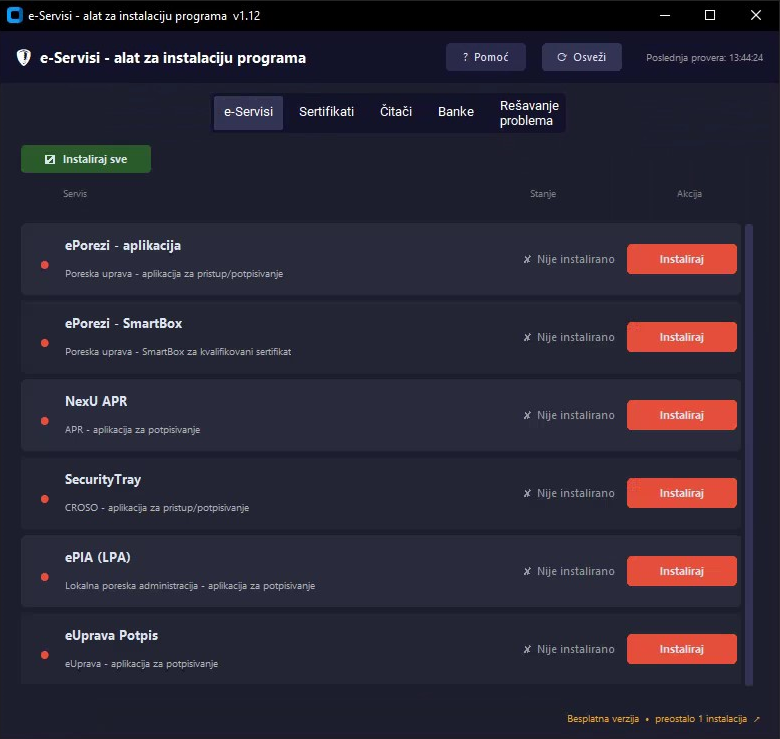

Alat za instalaciju i ažuriranje programa potrebnih za rad sa državnim i bankarskim portalima u Srbiji.
Program automatski proverava da li su aplikacije instalirane i pokrenute, nudi instalaciju, ažuriranje i deinstalaciju — sve na jednom mestu, bez pretraživanja sajtova.
• e-Servisi — ePorezi i SmartBox (Poreska uprava), SecurityTray (CROSO), NexU APR (APR), ePIA (LPA), eUprava Potpis (eUprava)
• Sertifikati — drajveri za smart kartice: TrustEdge (MUP i PKS), SafeSign (Pošta), Nexus Personal (Halcom), QSCD (ESS)
• Čitači — čitači dokumenata (lična karta, zdravstvena kartica, saobraćajna dozvola, oružje)
• Banke — Halcom Personal E-bank, Office Banking Desktop, OTP Biznis e-bank, Raiffeisen Online Biznis
•
U neregistrovanoj verziji mogućnost 1 instalacije besplatno.
Kontakt: eservisisrbija@gmail.com
